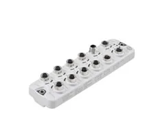

Valves
Van chức năng, van tỷ lệ và van an toàn Norgren. Tra cứu theo part number, đối chiếu datasheet và phụ kiện liên quan trước khi báo giá.
4 nhóm sản phẩm, 12 category, tối ưu cho tra cứu part number, datasheet và RFQ kỹ thuật.

Van chức năng, van tỷ lệ và van an toàn Norgren. Tra cứu theo part number, đối chiếu datasheet và phụ kiện liên quan trước khi báo giá.
Công tắc áp suất cơ-điện, cảm biến áp suất điện tử và cảm biến lưu lượng Norgren. Đối chiếu mã, dải đo và datasheet trước khi báo giá.
Bơm chân không, giác hút – bellows và công tắc chân không Norgren. Tra cứu mã, đối chiếu datasheet và vật liệu giác hút trước khi báo giá.
Cáp – đầu nối, IO-Link master và I/O module Norgren. Tra cứu mã, đối chiếu datasheet, số cổng và chuẩn kết nối trước khi báo giá.

Van chức năng (functional valves) Norgren là nhóm van điều khiển hướng và đóng/mở dòng khí trong hệ thống khí nén, gồm van điện từ (solenoid), van đảo chiều và van điều khiển bằ...

Van tỷ lệ (proportional valves) Norgren điều khiển áp suất hoặc lưu lượng khí một cách liên tục theo tín hiệu analog (ví dụ 0–10V, 4–20mA), dùng trong các ứng dụng cần kiểm soát...

Van an toàn (safety valves) Norgren được dùng để bảo vệ hệ thống khí nén và người vận hành, gồm các chức năng như xả khí an toàn, ngắt và khóa nguồn khí (soft-start/dump). Vì li...

Công tắc áp suất cơ-điện (electro-mechanical pressure switches) Norgren đóng/ngắt tiếp điểm khi áp suất đạt ngưỡng cài đặt, dùng để bảo vệ và điều khiển hệ thống khí nén hoặc th...

Cảm biến và công tắc áp suất điện tử (electronic pressure switches & sensors) Norgren đo áp suất và xuất tín hiệu dạng switch, analog (4–20mA, 0–10V) hoặc IO-Link, kèm màn hình ...

Cảm biến lưu lượng (flow sensors) Norgren đo và giám sát lưu lượng khí nén trong hệ thống, hỗ trợ theo dõi tiêu thụ khí và phát hiện rò rỉ. Khi chọn, bạn cần xác định dải lưu lư...

Mass flow controllers (MFC) Norgren điều khiển lưu lượng khối của khí theo giá trị đặt (setpoint), dùng trong các ứng dụng cần định lượng khí chính xác như xử lý bề mặt, phòng t...

Bơm và bộ tạo chân không (vacuum pumps/generators – ejectors) Norgren tạo chân không cho các hệ gắp – đặt, đóng gói và tự động hóa. Khi chọn, bạn cần xác định độ chân không tối ...

Giác hút và bellows (vacuum cups & bellows) Norgren là bộ phận tiếp xúc trực tiếp với vật cần gắp trong hệ chân không, có nhiều vật liệu, đường kính và kiểu nếp gấp khác nhau. K...

Công tắc và cảm biến chân không (vacuum switches) Norgren giám sát mức chân không và xác nhận vật đã được gắp giữ chắc trước khi di chuyển, giúp tăng độ tin cậy cho hệ gắp – đặt...

IO-Link master và I/O module Norgren tập trung tín hiệu từ cảm biến – cơ cấu chấp hành và kết nối lên mạng điều khiển nhà máy qua fieldbus. Khi chọn, bạn cần xác định số cổng IO...

Cáp và đầu nối (cables & connectors) Norgren kết nối cảm biến, cơ cấu chấp hành và IO-Link master trong tủ điều khiển và trên máy. Khi chọn, bạn cần xác định kiểu đầu nối (M8/M1...